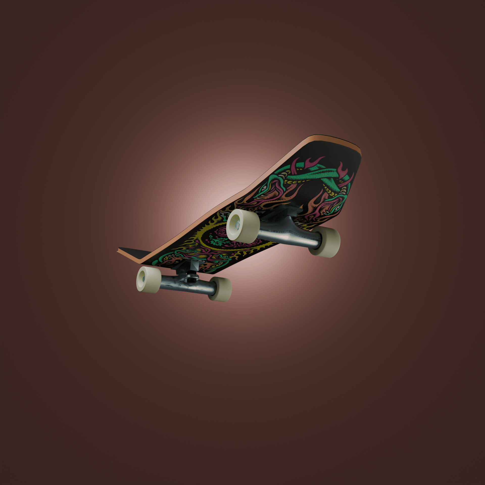

Reinell Emmanuel B. Avila — "The odds may be low but never zero"
Wazaaa! I'm Emman from PWU JASMS, Quezon City. (Born in October 7, 2005), I am a fast learner; there are some things that will take some time, but in the very end, I will still get the job done. :)
• New Filipino Private School (2011 - 2015)
• Sto. Nino Parochial School (2015 - 2016)
• Hope Christian Academy (2016 - 2017)
• Hope Christian Academy (2017 - 2020)
• San Francisco Highschool (2020 - 2021)
• UP Diliman (2027 - Future)
My first short story animation I made using the Wick Editor. I try to capture the old animation style from YouTube I used to watch in the 2010s. :)

My first 3D model and animation made in Blender. It is a simple preview of the skateboard I made in a looping GIF.